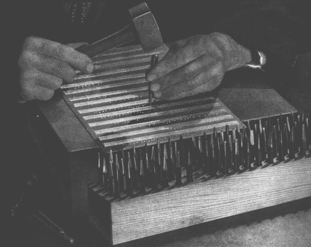
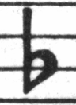
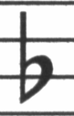
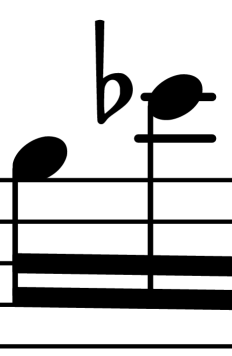
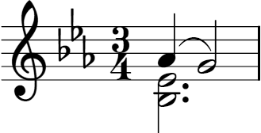
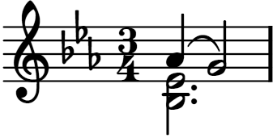

| [ << Incisione musicale ] | [Inizio][Contenuti][Indice][ ? ] | [ Bibliografia >> ] | ||
| [ < Storia di LilyPond ] | [ Su : Incisione musicale ] | [ Font musicali > ] | ||
1.2 Incisione in dettaglio
L’arte della tipografia musicale è chiamata incisione (su lastra), un termine che deriva dalla pratica della stampa musicale a mano.1 Solo pochi decenni fa, gli spartiti erano realizzati incidendo e punzonando la musica in modo speculare su una lastra di zinco o peltro. La lastra, poi, veniva inchiostrata e le depressioni prodotte da incisioni e punzonature trattenevano l’inchiostro. Imprimendo la carta sulla lastra, si produceva l’immagine della pagina. Punzonature e incisioni erano realizzate completamente a mano e correggere un errore era piuttosto laborioso, perciò l’incisione doveva essere praticamente perfetta al primo colpo. Saper incidere le lastre era una competenza che richiedeva un alto grado di specializzazione; un artigiano doveva sostenere quasi cinque anni di formazione prima di acquisire il titolo di maestro incisore, e per diventare veramente abile servivano altri cinque anni di esperienza.

LilyPond si ispira alle incisioni manuali tradizionali pubblicate per tutta la prima metà del XX secolo dalle principali case editrici musicali europee, tra cui Bärenreiter, Duhem, Durand, Hofmeister, Peters e Schott. Quei nomi e quel periodo storico sono talvolta considerati il culmine della pratica dell’incisione musicale artigianale. Avendo studiato queste edizioni, abbiamo imparato molto su come stanno le cose in uno spartito ben inciso e ne abbiamo individuato gli elementi da imitare con LilyPond.
| Font musicali | ||
| Spaziatura ottica | ||
| Tagli addizionali | ||
| Dimensionamento ottico | ||
| Perché lavorare così duramente? |
| [ << Incisione musicale ] | [Inizio][Contenuti][Indice][ ? ] | [ Bibliografia >> ] | ||
| [ < Incisione in dettaglio ] | [ Su : Incisione in dettaglio ] | [ Spaziatura ottica > ] | ||
Font musicali
Le immagini qui sotto mostrano alcune differenze tra un’incisione tradizionale e un tipico spartito prodotto dal computer. L’immagine a sinistra riproduce un bemolle preso da un’edizione Bärenreiter incisa a mano; quella a destra raffigura lo stesso segno ma preso da un’edizione della stessa musica pubblicata nel 2000. Nonostante che le due immagini siano stampate con la stessa tonalità d’inchiostro, la versione Bärenreiter sembra più scura: le linee del rigo sono più grosse e il bemolle appare audacemente arrotondato, quasi voluttuoso. Nell’immagine a destra, invece, le linee sono più sottili e il segno è piuttosto diritto e con spigoli vivi.
|  |  | |
| Bärenreiter (1950) | Henle (2000) |
Quando abbiamo deciso di scrivere un programma per creare la tipografia musicale, non esistevano caratteri liberamente disponibili che corrispondessero all’eleganza delle nostre edizioni preferite. Per nulla scoraggiati, imperterriti abbiamo creato una collezione di simboli musicali basandoci sulle belle stampe degli spartiti incisi a mano. L’esperienza, poi, ha contribuito a sviluppare un certo gusto tipografico e ci ha permesso di apprezzare anche i sottili dettagli del design. Senza quest’esperienza, non avremmo potuto renderci conto di quanto brutti fossero i caratteri che avevamo ammirato all’inizio.
Di seguito ne esemplifichiamo due: la serie superiore è nel font predefinito del programma Sibelius (l’Opus); la serie inferiore, in quello di LilyPond.

I simboli di LilyPond sono più grossi e il loro peso è più coerente, il che li rende più facili da leggere. I tratti terminali sottili, come quelli alle due estremità della pausa di un quarto, non dovrebbero finire con punte taglienti, ma piuttosto con forme arrotondate, perché gli spigoli vivi delle matrici dei punzoni sono fragili e a forza di battere sul metallo si usurano rapidamente. Considerati insieme, nerezza del carattere, spessore delle linee, delle travature e delle legature devono essere ben amalgamati insieme per restituire un’impressione generale forte ma equilibrata.
Inoltre, notate che la testa della nostra semiminima non è ellittica, ma leggermente sagomata a diamante. Il gambo verticale del segno di bemolle è lievemente rastremato, allargandosi verso l’alto. I segni di diesis e bequadro si distinguono meglio da lontano perché le loro linee angolate presentano una pendenza diversa e i tratti verticali sono più grossi.
| [ << Incisione musicale ] | [Inizio][Contenuti][Indice][ ? ] | [ Bibliografia >> ] | ||
| [ < Font musicali ] | [ Su : Incisione in dettaglio ] | [ Tagli addizionali > ] | ||
Spaziatura ottica
Nella spaziatura della musica, la distribuzione dello spazio dovrebbe rispecchiare le durate fra le note. Tuttavia, come abbiamo visto prima nella suite di Bach, molti spartiti moderni aderiscono alle durate con precisione matematica, con scarsi risultati. Nel prossimo esempio, lo stesso motivo viene stampato due volte: la prima, usando l’esatta spaziatura matematica; la seconda, con le correzioni. Quale preferite?
Ciascuna misura contiene unicamente note da suonare in un ritmo costante, e gli spazi interposti dovrebbero riflettere questa situazione. Purtroppo, però, l’occhio ci inganna un po’: non solo esso rileva la distanza tra le teste delle note, ma tiene conto anche di quella tra gambi consecutivi. Di conseguenza, le note di una combinazione gambo in su/gambo in giù dovrebbero essere più distanti tra loro e quelle di una combinazione gambo in giù/gambo in su più vicine, il tutto a seconda di come si combinano le posizioni verticali delle note. Le due misure inferiori sono stampate con questa correzione; quelle superiori, tuttavia, contengono ammassi di note gambo in giù/gambo in su. Un maestro incisore avrebbe aggiustato la spaziatura come richiesto per compiacere l’occhio.
Gli algoritmi di spaziatura di LilyPond prendono in considerazione anche le stanghette. Perciò, l’ultimo gambo in su nell’esempio correttamente spaziato è stato allontanato ulteriormente dalla stanghetta finale per evitare troppe linee verticali vicine nella parte finale della misura. Un gambo in giù, invece, non avrebbe richiesto quest’accortezza.
| [ << Incisione musicale ] | [Inizio][Contenuti][Indice][ ? ] | [ Bibliografia >> ] | ||
| [ < Spaziatura ottica ] | [ Su : Incisione in dettaglio ] | [ Dimensionamento ottico > ] | ||
Tagli addizionali
I tagli addizionali presentano una sfida tipografica: rendono più difficile inserire il corretto spazio tra simboli musicali vicini e debbono essere abbastanza nitidi da permettere di identificare l’altezza della nota a colpo d’occhio. Nell’esempio qui sotto, vediamo come i tagli addizionali dovrebbero essere più spessi di una normale linea del rigo e che un incisore esperto li accorcerà per permettere di avvicinare le alterazioni alla testa della nota. Nell’incisione con LilyPond abbiamo incluso anche questa funzionalità.
 |  |
| [ << Incisione musicale ] | [Inizio][Contenuti][Indice][ ? ] | [ Bibliografia >> ] | ||
| [ < Tagli addizionali ] | [ Su : Incisione in dettaglio ] | [ Perché lavorare così duramente? > ] | ||
Dimensionamento ottico
Potrebbe essere necessario stampare la musica in una varietà di formati diversi. All’inizio, questo si poteva ottenere creando punzoni in ciascuno dei corpi richiesti, il che significa che ogni punzone era disegnato per dare il meglio di sé in quel particolare corpo. Con l’avvento dei font digitali, invece, una singola struttura può essere rimpicciolita o ingrandita in scala a piacimento, il che è molto comodo, ma nei corpi più piccoli i caratteri appariranno molto ‘leggeri’.
In LilyPond, abbiamo creato font in una serie di pesi corrispondenti a una gamma di corpi per la musica. La prossima è un’incisione di LilyPond in corpo 26:

e questa è la stessa incisione in corpo 11, poi ingrandita del 236% per riportarla alle stesse dimensioni dell’esempio precedente:

Nei corpi piccoli, LilyPond usa linee proporzionalmente più grosse in modo che la musica sia ancora ben leggibile.
Ciò permette anche che righi in corpi diversi coesistano pacificamente se usati insieme sulla stessa pagina:
| [ << Incisione musicale ] | [Inizio][Contenuti][Indice][ ? ] | [ Bibliografia >> ] | ||
| [ < Dimensionamento ottico ] | [ Su : Incisione in dettaglio ] | [ Incisione automatizzata > ] | ||
Perché lavorare così duramente?
Di solito, i musicisti sono presi più dall’eseguire la musica che dall’esaminarla così come appare sulla pagina, perciò i dettagli tipografici troppo cavillosi rischiano di passare per accademia. Ma non è così. Gli spartiti sono materiale da utilizzare praticamente: ogni cosa viene fatta per aiutare il musicista a migliorare il proprio rendimento, e tutto ciò che si rivela poco chiaro o poco piacevole da leggere diventa un ostacolo.
La musica incisa nel modo tradizionale impiega simboli neri su un rigo ‘pesante’ per creare un aspetto forte, ben bilanciato, chiaramente distinguibile quando è molto distante da chi deve leggerla: se messa su un leggio, per esempio. Un’attenta distribuzione degli spazi bianchi permette di disporre le note in modo molto serrato senza però affollare i simboli sul rigo. Il risultato riduce al minimo il numero delle voltate, con grande vantaggio per l’esecutore.
Questa è una caratteristica tipica della tipografia. L’aspetto della pagina dovrebbe essere bello, e non di per sé, ma soprattutto perché aiuta il lettore nel proprio compito. Per la musica stampata ciò è doppiamente importante, perché i musicisti reggono un carico di attenzione limitato: meno ne debbono impiegare per leggere la musica, più ne possono concentrare nell’eseguirla. In altre parole: migliore è la tipografia, migliori saranno le esecuzioni.
Questi esempi dimostrano che la tipografia musicale è un’arte raffinata e complessa, la cui messa in pratica richiede notevoli competenze di solito non possedute dai musicisti. LilyPond costituisce il nostro sforzo per importare l’eccellenza grafica della musica incisa a mano nell’era informatica e renderla disponibile a qualunque musicista. Abbiamo sintonizzato i nostri algoritmi, i disegni dei font e le impostazioni del programma per produrre stampe corrispondenti alla qualità delle vecchie edizioni che amiamo osservare e suonare.
Note a piè di pagina
[1] I primi stampatori europei esplorarono diversi procedimenti, tra cui blocchi di legno intagliati a mano, caratteri mobili e sottili lastre metalliche incise. La tipocomposizione presentava il vantaggio di poter essere corretta più facilmente e di semplificare l’inserimento di testo e parole, ma solo l’incisione permetteva di impaginare la musica senza ostacoli e di inserire notazioni impreviste. Alla fine, gli spartiti incisi a mano divennero lo standard per tutta la musica stampata, con l’eccezione di alcuni inni e canzonieri per i quali la tipocomposizione era giustificata per il fatto di essere più semplice ed economica, anche nel XX secolo.
| [ << Incisione musicale ] | [Inizio][Contenuti][Indice][ ? ] | [ Bibliografia >> ] | ||
| [ < Dimensionamento ottico ] | [ Su : Incisione in dettaglio ] | [ Incisione automatizzata > ] | ||
Altre lingue: English, deutsch, español, français, magyar.
About automatic language selection.